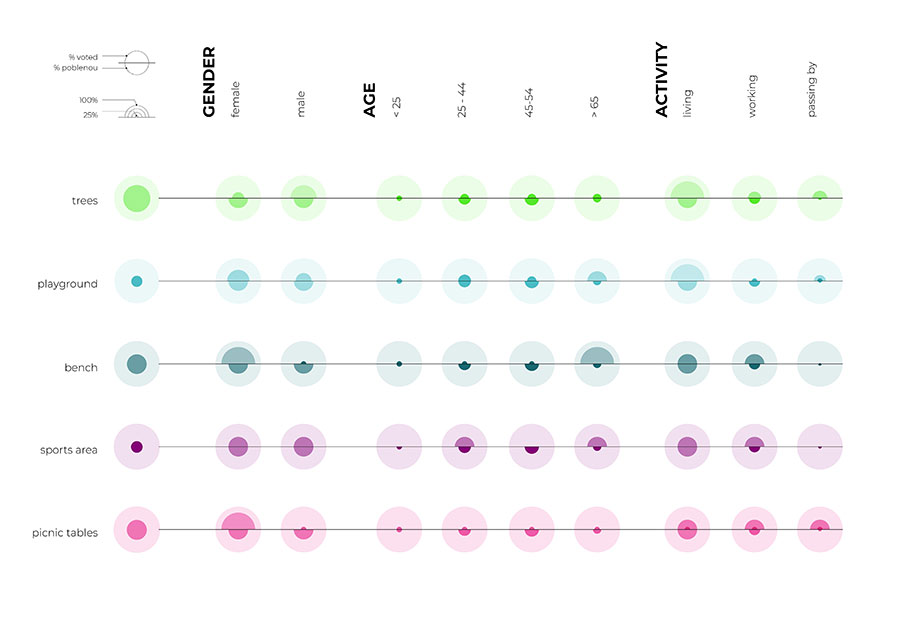

Veus
Veus – a catalan word meaning both “(you) see” and “voices” – is an app for participatory design process that uses AR to allow a seamless and constant dialogue between the municipality and the citizens. Based on the principle of first seeing and then speaking out your opinion, it enables municipalities to convey ideas or projects for specific areas and gives citizens the opportunity to vote them and to add elements to the design which they think would improve the design of the public space. Through different data display techniques, municipalities can extract and profile detailed information on the citizen’s opinion based on different demographic variables, such as their age or gender, and the place and time of day from which they have used the app. Project exhibited at the Global Grad Show in Dubai, 2018 Click here for more information!


